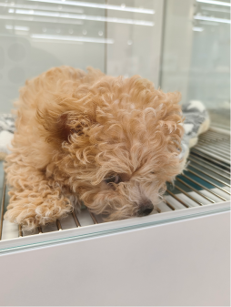
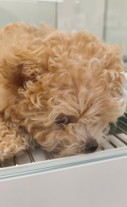
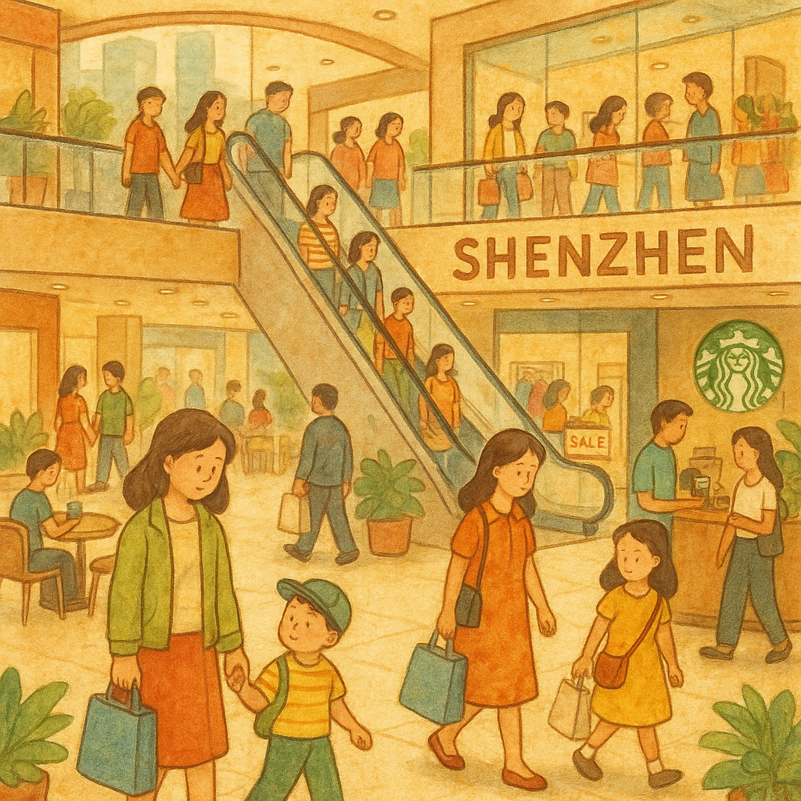

看宠物店里面很多小狗 我住在深圳的时候，每天都会去深圳楼下的商场吃饭，然后顺便去看一看这个宠物店的小狗小猫放松一下。
2025.11，深圳宠物店
G1 宠物店玻璃柜中的 → left [S_overlap_F1]
G2 深圳商场的日常 → right [S_text_F2]
画布: 1275 × 528 px
规划耗时: 1.29 ms
OmDet: 3 个检测 (bear, desk, dog)
S_text_F2 AI生成图片 (耗时 46195.78ms)
S_overlap_F1 crop: [50,50]-[200,300] 来源=llm 匹配=无